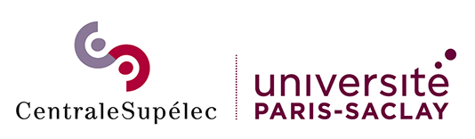
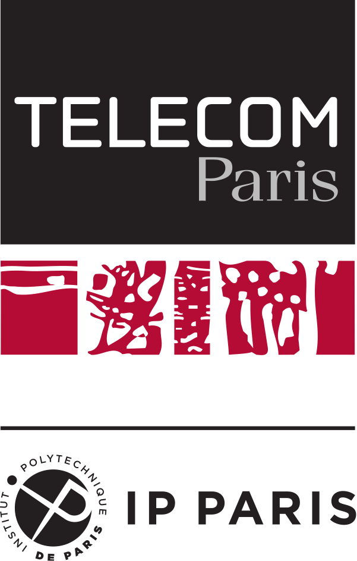

| Home | Call for Papers | Submission | Program |
GraDSci: Graph Data Science and Applications is a Special Session organized in conjunction with the 10th IEEE International Conference on Data Science and Advanced Analytics (DSAA). This special session aims to bring together researchers from academia and industry who are interested in state-of-the-art algorithmic techniques and methodologies in graph data science, ranging from graph mining to graph representation learning, along with their applications.
We live in an interconnected world where entities interact with each other creating complex systems that can be modeled by graphs. Social networks, for example, are used to model interactions among individuals in collaboration networks and online social media applications. Information networks, such as the Web or knowledge graphs, provide an effective way to model and navigate relational content. In the biomedical domain, complex heterogeneous graphs are used to describe the interactions between patients, diseases, and drugs, toward detecting polypharmacy side effects or addressing drug repurposing problems. Finally, molecular graphs, which capture the interactions between atoms or molecules, have recently been used to discover new materials, accelerating scientific discovery.
The topics of interest of the GraDSci special session are graph data science algorithms and methods, and their application domains.
GraDSci is jointly organized by Fragkiskos D. Malliaros from CentraleSupélec, Inria, Université Paris-Saclay, and Jhony H. Giraldo from Télécom Paris, Institut Polytechnique de Paris.
|
 |
|
 |